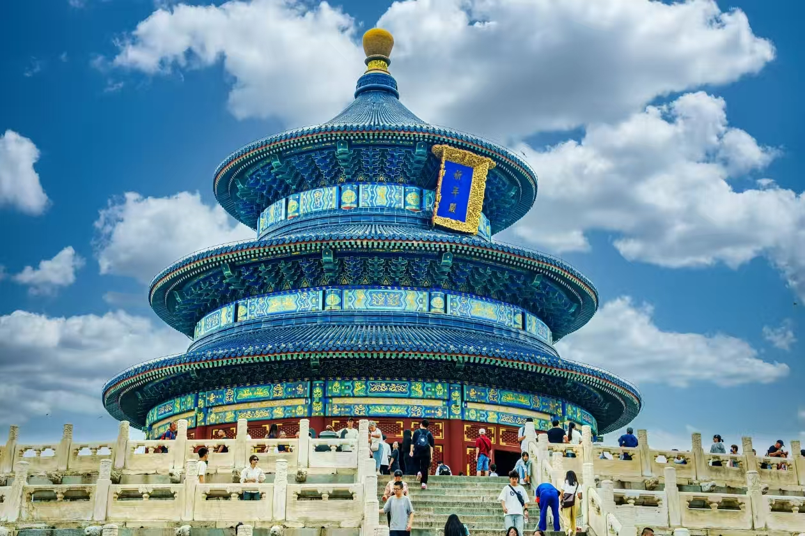

Beijing Travel Guide 2026: Everything You Need Before You Arrive
Beijing is one of those cities where preparation makes a massive difference. Show up without booking anything and you'll spend half your trip turned away at gates, waiting in wrong queues, or eating overpriced tourist food you didn't want. Do a little homework first and the whole city opens up. Here's what actually matters.
Before You Leave Home
Your passport is everything in Beijing. Every attraction, every hotel, every security checkpoint — they all want to see it. Not a photo on your phone, not a photocopy. Bring the actual passport and keep it on you. I'd also recommend saving a photo of the main information page in your phone gallery just in case, but carry the real thing.
Download a few apps before you fly. Amap (高德地图) for navigation — it's more accurate than Google Maps for Beijing streets and works offline. Alipay or WeChat Pay for payments — Beijing is almost entirely cashless now, though keeping ¥100-200 in small notes is smart for the odd street vendor. And download whatever VPN you're using before you land, because you won't be able to access most VPN websites once you're in China.
Pack one pair of genuinely comfortable walking shoes. I cannot stress this enough. The Forbidden City alone will eat 20,000 steps. Bring a portable charger too — maps, tickets and translation apps drain batteries fast.
Beijing's weather varies a lot by season. Spring (April-May) and autumn (September-October) are the sweet spots — mild temperatures and occasionally clear skies. Summer is hot and humid. Winter gets genuinely cold, and air quality drops. Whatever season you visit, check the AQI forecast for your specific days — some days are fine, others you can taste the air, and that affects how you want to plan outdoor time.
Almost every major museum and monument in Beijing closes on Mondays — the Forbidden City, National Museum, Mao's Mausoleum, most galleries. Plan your big indoor days for Tuesday through Sunday.
Booking Tickets: What You Need to Know

The Meridian Gate — main entrance to the Forbidden City. Your passport gets scanned here on entry.
The Forbidden City is the hardest ticket to get and the one most people forget to book. Tickets open exactly 7 days in advance on the official Palace Museum WeChat mini program, every night at 8pm Beijing time. Morning slots fill up in minutes during peak season — I mean that literally, not as an exaggeration. Set a reminder for 7:58pm, have the mini program open, and move fast. Morning sessions (before noon) are better anyway: fewer people, better light for photos. Tickets are ¥60. Your passport is your entry credential — the name must match exactly, middle names included.
Tiananmen Square is free but still requires advance booking through the Tiananmen Square reservation mini program, up to 7 days ahead. If you want the flag-raising ceremony, select that time slot specifically and arrive at least an hour early — the crowds are real. The ceremony itself is brief, military-precise and oddly affecting.
Mao's Mausoleum is free. New bookings open at 12:30pm daily for visits 1-6 days out. Morning only — it closes in the afternoon. No photos inside, keep moving, stay quiet. It's a strange and memorable experience regardless of your politics.
The Great Wall sections all require advance booking now. Badaling is the most famous and the most crowded — weekends are genuinely overwhelming. Mutianyu is the better choice for most visitors: well-restored, far less crowded, and there's a cable car option if the steep sections are too much. Book 15 days in advance through the official website or Trip.com, tickets release at 8am. Go early — before 9am if possible.
The National Museum (free), Temple of Heaven,颐和园 Summer Palace and Yuanmingyuan Old Summer Palace are easier to get into — book 3-5 days ahead through their official WeChat accounts or Trip.com. Still book in advance though. Showing up without a reservation is increasingly unreliable at all Beijing's major sites.
Anyone near Tiananmen, the Forbidden City or the Great Wall offering "skip the line" tickets or "internal tickets" is either overcharging or outright scamming. Every single one. Book only through official channels.

Temple of Heaven — arrive before 9am to see locals doing tai chi in the surrounding park. The atmosphere is completely different from midday.
Food Worth Seeking Out

Beijing's historic sites are best in morning light — and with smaller crowds.
Peking duck is the obvious starting point. Si Ji Min Fu has good food at reasonable prices and is popular with locals. Bian Yi Fang specializes in the traditional braised-oven method — the meat comes out noticeably more tender than the hanging-roasted style. The eating ritual matters: skin first, dipped in white sugar, then the pancake wraps with scallion, cucumber and hoisin sauce. Order the duck carcass soup at the end. Skip the tourist duck restaurants on Wangfujing — overpriced and ordinary.
For breakfast, jianbing is what locals actually eat. It's a savory crepe made fresh to order — egg, crispy fried wonton, chili sauce, optional sausage — costs ¥10-15 from street carts near subway exits. I ate one almost every morning and never got tired of it. Look for the carts between 7-9am.
Old Beijing copper hotpot is worth a dedicated meal. Clear broth base, hand-cut fresh lamb, sesame dipping sauce with fermented tofu and chili, garlic vinegar on the side. Nan Men Shuan Rou and Ju Bao Yuan on Niujie are reliable old-school spots. Order the sesame flatbread. The lamb is the whole point.
Zhajiang noodles (炸酱面) are the city's everyday comfort food — thick noodles topped with a pork and soybean paste sauce with fresh vegetable garnishes. Fang Zhuan Chang No.69 or Hai Wan Ju are decent spots to try the real version.
Avoid Wangfujing Snack Street entirely. It looks interesting on a map. It's overpriced tourist theater. The hutong neighborhoods around Nanluoguxiang and Beihai Park have far better food at normal prices.


Getting Around Beijing
The metro covers almost everywhere you'll want to go and is fast, clean and cheap. Fares run ¥3-7 depending on distance. Pay with Alipay or WeChat's transit QR code — no need for a physical card. The airport express costs ¥25 and takes about 30 minutes to the city center.
Rush hour on weekdays — 7:30-9am and 5-7pm — is genuinely packed at major interchange stations. If you're not in a hurry, avoid it. Platforms at Xizhimen or Guomao during peak hours are a different experience from the rest of the day.
DiDi (China's ride-hailing app) works well and accepts foreign payment cards since 2024. Useful for late nights, bad weather, or when you're carrying luggage. Don't take taxis from people who approach you at train stations or tourist sites — use the app or find a metered taxi rank.
For the Great Wall at Badaling, take the suburban S2 train from Huangtudian Station or a legitimate tour bus — not the unofficial drivers who approach you outside Beijing North Station. For Mutianyu, bus 916 from Dongzhimen or a hired car are both reliable options.
Where to Stay

The Forbidden City moat at dusk — one of Beijing's quieter beautiful spots, usually missed by visitors who leave after the main palace closes.
Qianmen and Dashilar put you closest to the core sights — Tiananmen, the Forbidden City and Temple of Heaven are all walkable or a short metro ride away. Hotels here range from budget chains to solid mid-range options. For a first visit this is the most practical area.
Dongsi and Nanluoguxiang give you the hutong experience — older neighborhoods, narrow lanes, small independent restaurants and guesthouses built into traditional courtyard houses. Still good metro access, and the atmosphere in the evenings is genuinely lovely. Good choice if you want to feel like you're actually in Beijing rather than in a hotel district.
Xizhimen is a major transport hub where several metro lines converge. Efficient rather than atmospheric. Practical if you're arriving by high speed train or moving around a lot. Chain hotels dominate.
Budget reality: chain hotels near metro stations (like Hanting or Jixian) run ¥150-350 a night in most areas. Mid-range is ¥300-600. Hutong guesthouses vary wildly from ¥200 to over ¥1,000 depending on quality and location. Book well ahead for Golden Week (first week of October) and May holidays — prices spike and good places fill up weeks in advance.